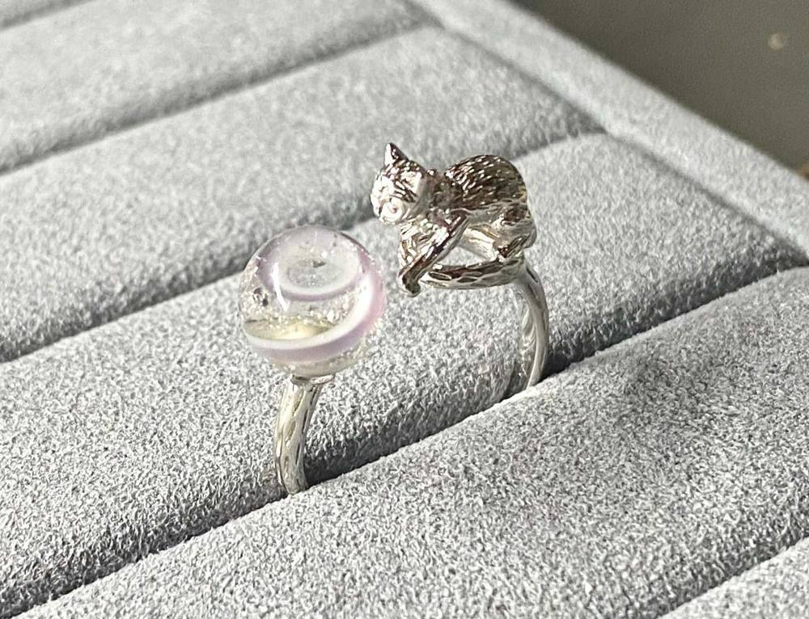
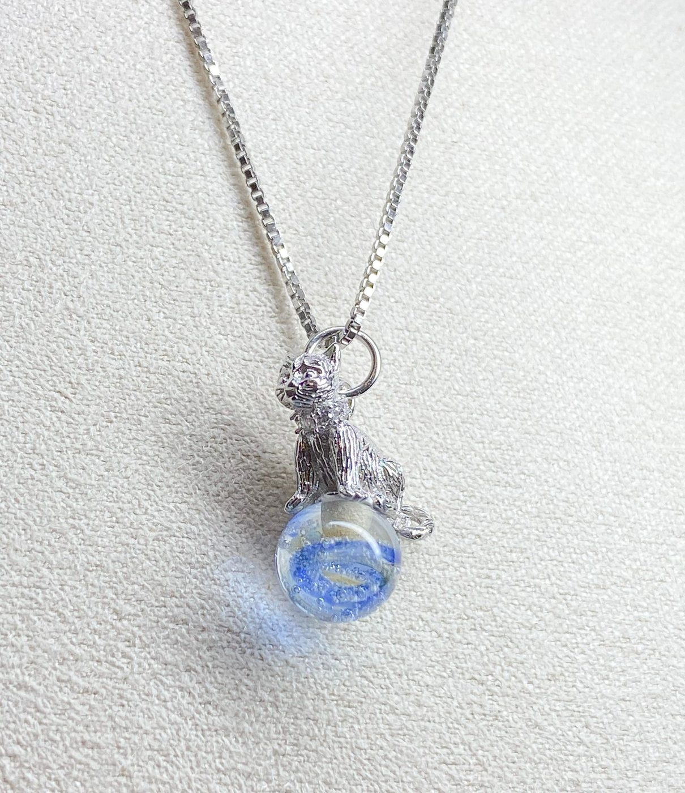
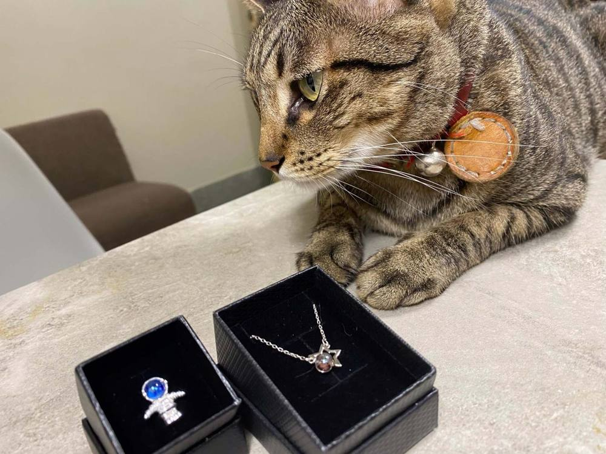

規格
- 加入材質
- 可選：毛髮或骨灰
- 圓珠尺寸
- 直徑 7–9mm
- 金屬
- 純銀（金色／銀色）
- 戒圍
- [戒圍說明]
- 玻璃原材
- 義大利
- 製作時間
- 預訂後約 1.5 個月
如選擇加入紀念元素
- 毛髮：裝一半至 4×6 公分夾鏈袋
- 骨灰：裝一半至 4×6 公分夾鏈袋，或約三份一布丁小湯匙已足夠
- 在夾鏈袋寫上聯絡人姓名與電話，放入信封寄到工作室
- 如有剩餘的紀念元素，會連同作品一併歸還


